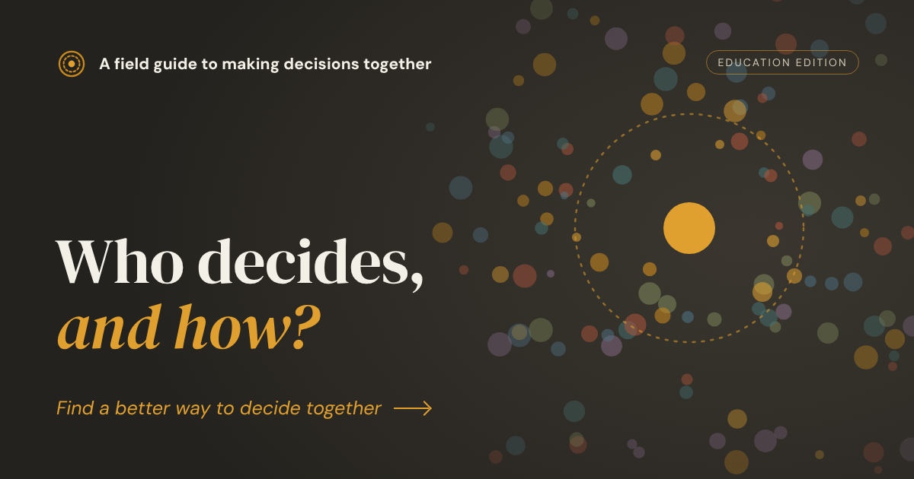

Brand assets
Logo and share image
The guide's mark is three circles: a solid outer ring for the group, a dashed ring for the views in it, and a filled centre for the decision. It comes in two colours, ochre #C98A1E and paper #F3F0E7. Every logo below is a 1024×1024 PNG. Pick the one that matches your background.
Which file do I use?
App icon, social avatar, favicon → Ochre on paper tile, the square, filled version. It is already the site's favicon and home-screen icon.
On a light or cream background (documents, slides, letterhead) → Ochre · transparent.
On a dark background → Paper · transparent.
A filled badge on ochre or warm surfaces → Paper on ochre tile.


Social share image
The 1200×630 PNG that shows when the guide is shared in messages, on social media or in link previews. It is already set on every page; download it here for a post or a slide.

Share card · 1200×630
Link previews · social posts

Need another size or format? Get in touch through the link at the foot of the page.